Good food, plants only
Colourful, practical vegan recipes and handy kitchen tools — from quick breakfasts to weekend baking. Everything here is 100% plant-based and beginner-friendly.
Free Tools
Recipe Finder
Filter our recipe ideas by category and cooking time.
Serving Scaler
Scale a recipe up or down. Enter the original amount and servings.
Vegan Protein Calculator
Most adults need 0.8 to 1.6 g of protein per kg of body weight per day.
Ingredient Swap Finder
Find a plant-based substitute for egg or dairy.
Weekly Meal Planner
Get a simple 7-day vegan meal plan.
Guides
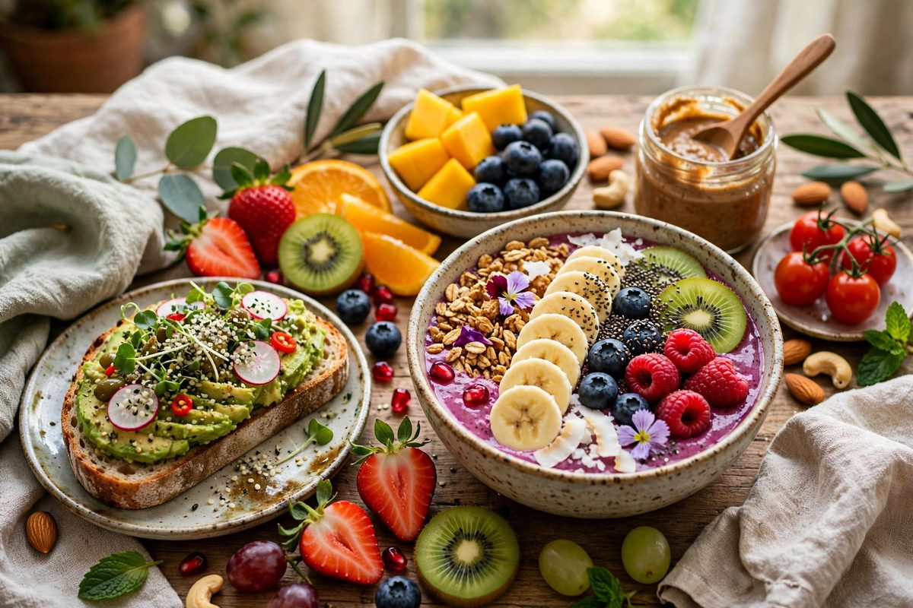
Vegan Breakfast IdeasTen quick, filling vegan breakfasts for busy mornings and slow weekends alike.
 Vegan Protein Sources
Vegan Protein SourcesThe best plant proteins, how much they contain, and how to combine them across the day.
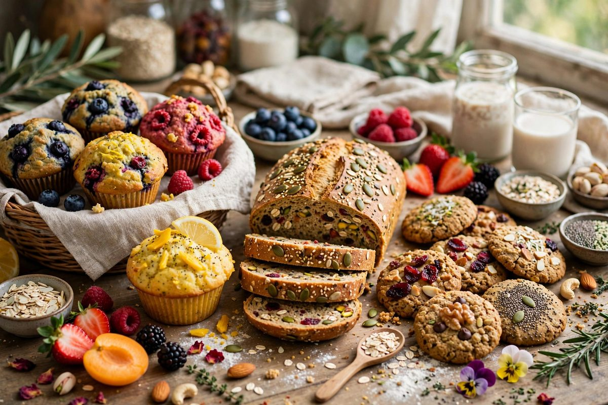
Vegan BakingHow to bake cakes, cookies, and bread without eggs or dairy — with swaps that actually work.
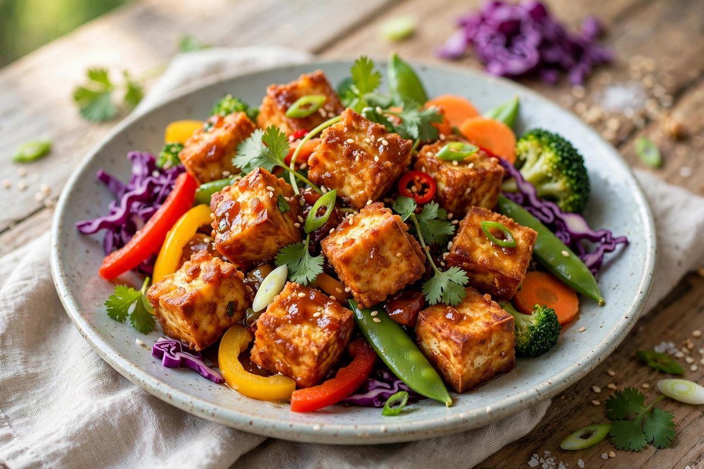
Tofu RecipesHow to cook tofu properly: pressing, marinating, and ten recipes that make it delicious.
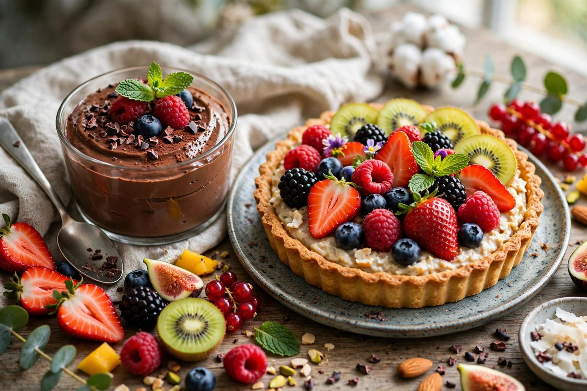
Vegan DessertsCakes, mousses, ice cream, and cookies — all vegan, all delicious, with tips for perfect results.
 Vegan Meal Prep
Vegan Meal PrepA week of vegan meals from one cooking session, with storage times and a sample plan.
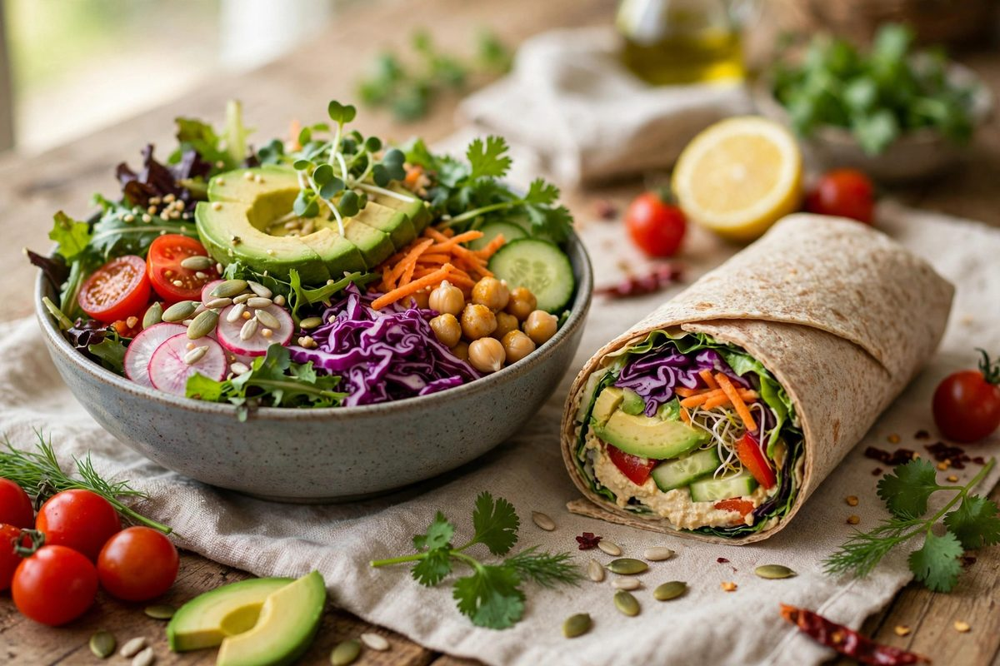
Vegan LunchesQuick vegan lunches for work and home: bowls, wraps, soups, and salads that keep you full.
 Vegan Dinners
Vegan DinnersFamily-friendly vegan dinners: curries, pastas, stews, and one-pan meals for weeknights.
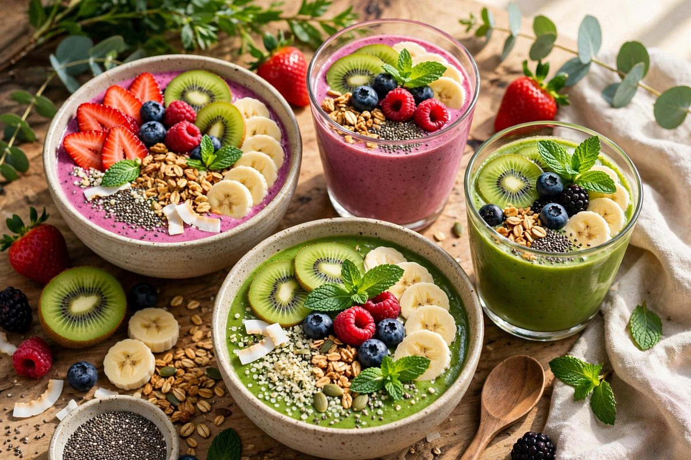
Vegan SmoothiesHow to build a balanced vegan smoothie: bases, proteins, and recipes for every goal.
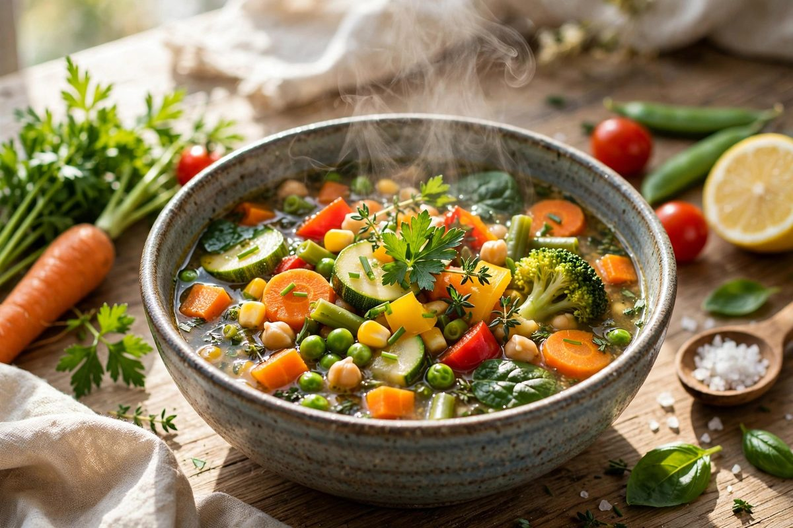
Vegan SoupsComforting vegan soups for every season: lentil, tomato, minestrone, and creamy blends.
 Vegan Salads
Vegan SaladsSalads that are actually meals: grain salads, hearty greens, and dressings that make them shine.
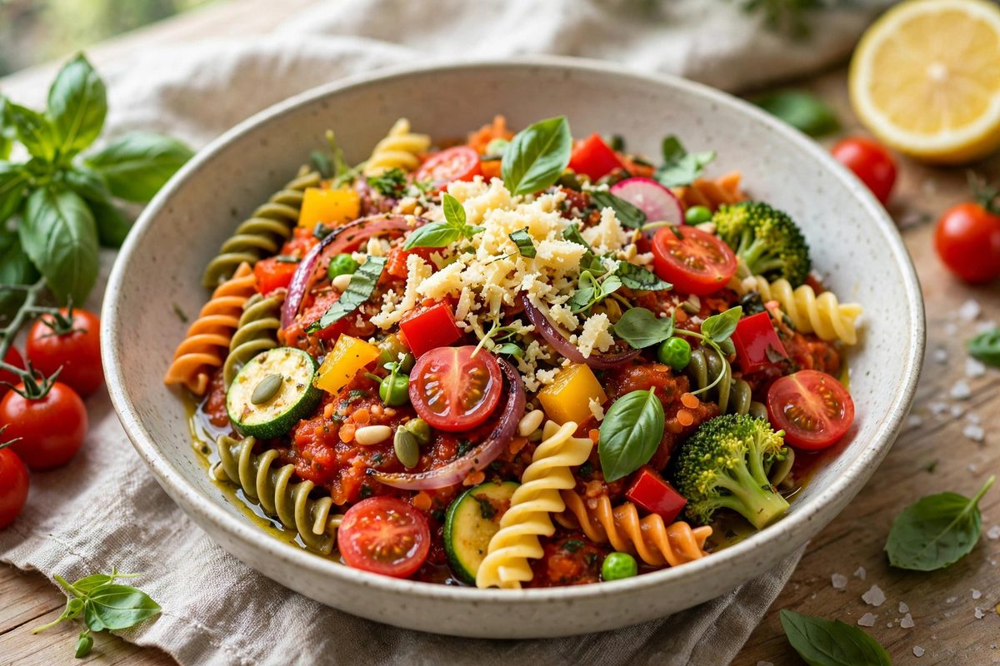
Vegan PastaVegan pasta dishes: tomato, creamy cashew, pesto, and puttanesca — plus pasta tips.
 Vegan Burgers
Vegan BurgersHow to make vegan burgers that hold together and taste great: beans, lentils, and mushrooms.
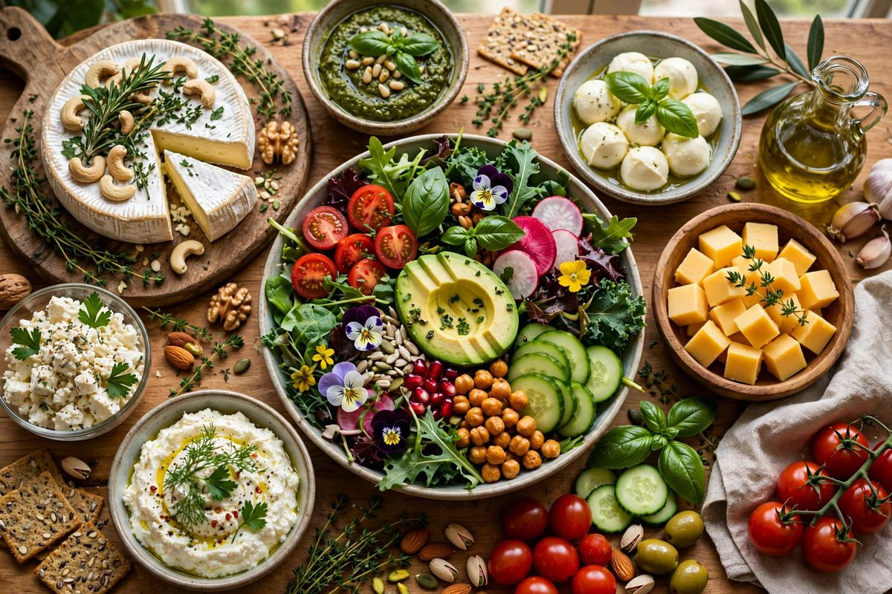
Vegan Cheese AlternativesNutritional yeast, cashew cheese, and shop-bought vegan cheese — what works and where.
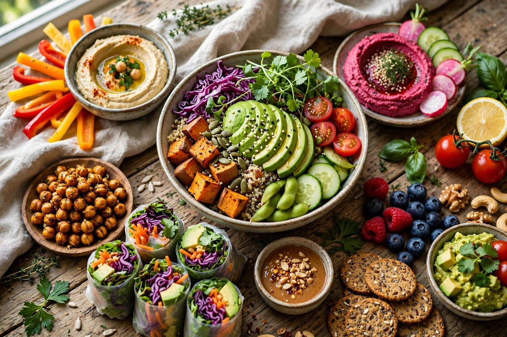
Vegan SnacksHealthy vegan snacks for work, school, and evenings — sweet, salty, and protein-rich.
 Vegan Holiday Recipes
Vegan Holiday RecipesFestive vegan recipes for Christmas, Thanksgiving, and celebrations — roasts, sides, and desserts.
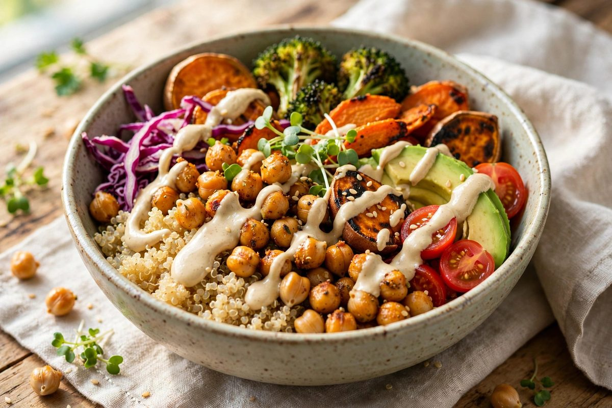
Vegan for BeginnersStarting a vegan diet: the first month, pantry staples, eating out, and common mistakes.
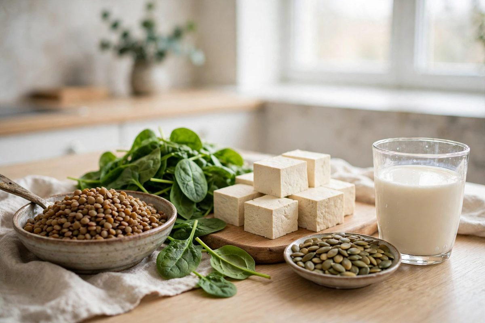
Vegan Iron & B12How vegans get enough iron and vitamin B12: best food sources, absorption tips, and supplements.
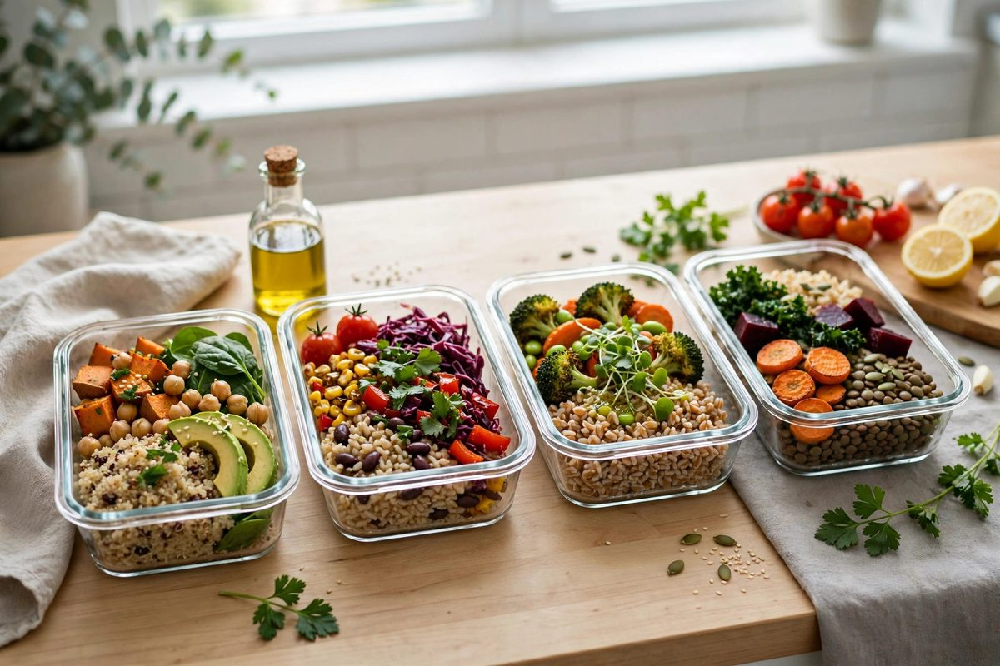
Vegan Meal PlanningHow to plan a week of vegan meals: templates, shopping lists, and batch-cooking routines.
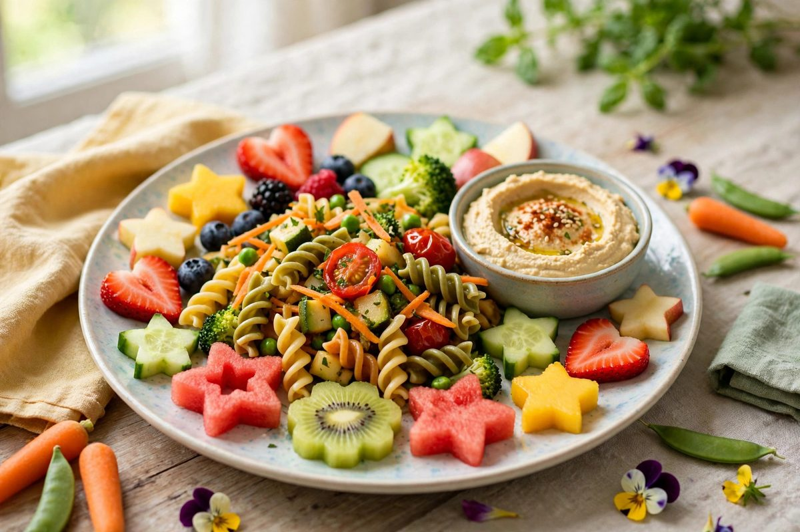
Vegan Kids MealsHealthy, fun vegan meals for children: lunchboxes, dinners, snacks, and nutrients to watch.